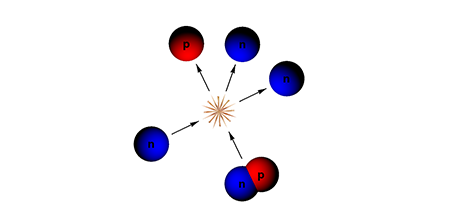

Nasz zakład jest częścią Instutu Fizyki. Znajdujemy się na drugim piętrze części B budynku Wydziału Fizyki Astronomii i informatyki Stosowanej Uniwersytetu Jagiellońskiego:
Badanie właściwości sił działających między składnikami jąder atomowych - protonami i neutronami – pozostaje wciąż aktualne, pomimo ogromu wiedzy uzyskanej od momentu odkrycia jądra atomowego w 1911 roku. To te siły są odpowiedzialne za to, że istnieją takie, a nie inne jądra atomowe. To one decydują o mechaniźmie reakcji jądrowych i rozpadów promieniotwórczych, w tym tych kluczowych dla energetyki jądrowej.
Układy kilkunukleonowe są idealnym laboratorium do badania sił jądrowych. Dla takich układów możemy dokładnie rozwiązać fundamentalne równania (Schrödingera, Lippmanna-Schwingera, Faddeeeva), które prowadzą od oddziaływań pomiędzy nukleonami do właściwości jąder (energia wiązania, rozmiary, rozkład materii i ładunku elektrycznego) i prawdopodobieństw różnych reakcji jądrowych.
W układzie trzech i w układach o większej liczbie nukleonów występują nie tylko oddziaływania między dwoma nukleonami, ale także oddziaływania wielonukleonowe. Szczególną rolę pełni oddziaływanie trzynukleonowe, a pełne poznanie jego natury jest jednym z naszych najważniejszych celów badawczych.
Ścisłe rozwiązania równań, w których występują modele oddziaływań jądrowych wykorzystywane są przez nas nie tylko do opisu procesów, w których bierze udział kilka nukleonów, ale także do badania oddziaływania elektronów, fotonów, pionów, mionów i neutrin z układami kilkunukleonowymi. W badaniach wykorzystujemy superkomputery zawierające dziesiątki tysięcy procesorów, a nasze obliczenia służą do projektowania eksperymentów i analizy danych doświadczalnych uzyskanych w wielu centrach badawczych, m.in. w HIGS (Durham, USA), JLab (Newport News, USA), MAMI (Moguncja, Niemcy), RIKEN (Wako, Japonia), RCNP (Osaka, Japonia) i Centrum Cyklotronowym Bronowice.
Obecnie koncentrujemy się na wykorzystaniu najnowszych sił i prądów jądrowych, wyprowadzonych w ramach Chiralnej Efektywnej Teorii Pola, ściśle powiązanej z QCD - fundamentalną teorią opisującej silne oddziaływania kwarków.
Badania naszego zakładu prowadzone są częściowo w ramach międzynarodowego projektu LENPIC oraz we współpracy dwustronnej z wieloma ośrodkami naukowymi na całym świecie, w szczególności z Uniwersytetem Ruhry w Bochum (Niemcy), Kyushu Institute of Technology w Kitakyushu (Japonia), Centrum Badawczym Jülich (Niemcy), Uniwersytetem w Pizie (Włochy) oraz INFN-Pisa (Włochy).